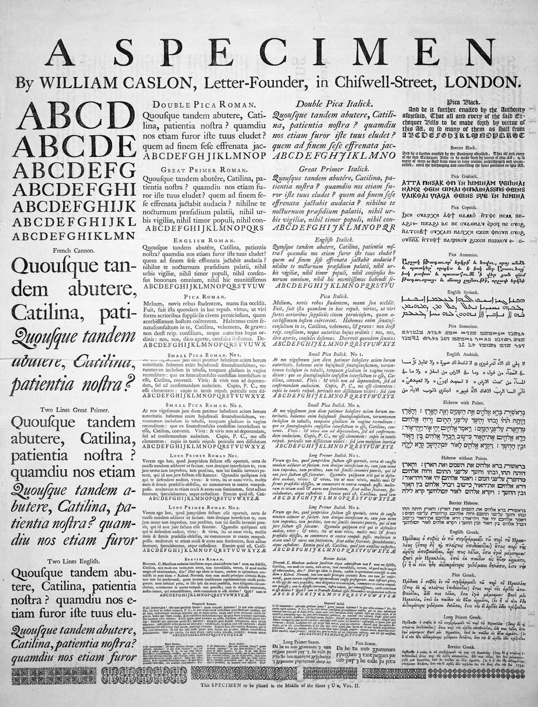

Yes and no. Sure, fonts are an important part of typography. But there’s much more to typography than fonts.
Similarly, there’s more to text formatting than what font to use. Text formatting includes everything that affects the appearance of the characters on the page—not only fonts, but also point size, bold or italic styles, small caps, letterspacing, and
In this chapter, there aren’t as many bright lines between correct and incorrect habits as in the last chapter. You won’t be able to get by on rote application of rules. You’ll need to start making typographic judgments of your own.
(And if you’re looking for the good fonts, they’re in the next chapter—font recommendations.)